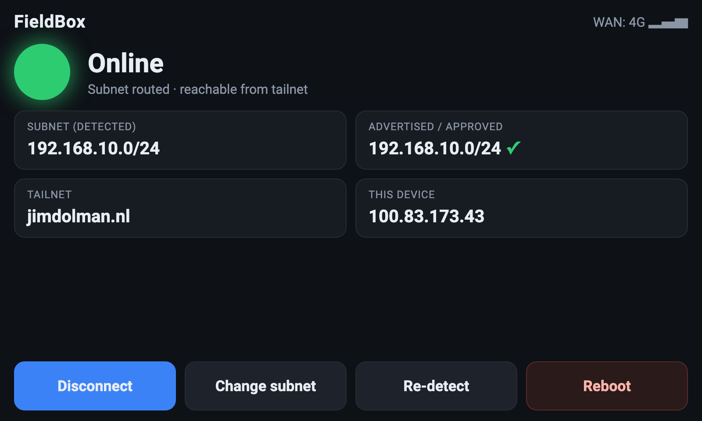
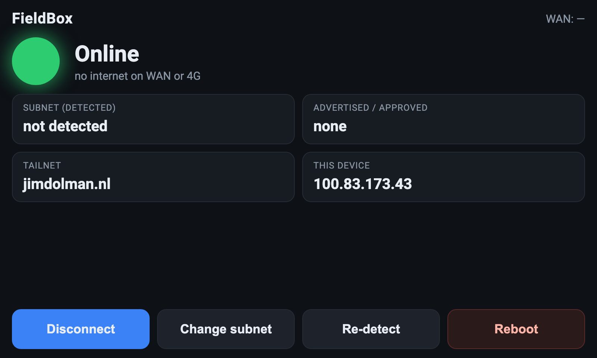

A rugged, self-contained Tailscale subnet router in a Pelicase. Drop it into a venue or production network and the rest of your tailnet reaches that LAN — over wired internet or a 4G prepaid modem. Built to be run by a non-technical operator: power on → green light → done.
github.com/jimdolman/fieldboxThe subnet-routing itself is a solved, robust problem — a couple of Tailscale commands plus one ACL rule, and Tailscale's default masquerade means the venue network needs zero changes. The real work is three things: the idiot-proof touchscreen GUI, the wired↔4G failover, and the Pelicase fabrication. None are hard; the time simply goes into polish and the case.
| Area | Effort | Notes |
|---|---|---|
| Tailscale subnet router | Easy | Well-trodden; masquerade removes all venue-side config. |
| Dual-WAN + 4G failover | Easy–moderate | NetworkManager route metrics + connectivity check. |
| Touchscreen GUI | Moderate | Already scaffolded & running (see §7). Mostly polish. |
| Pelicase fabrication | Moderate | Panel-mount cutouts, screen in lid, cooling — the manual bit. |
| Open item | Status | Decision & reason |
|---|---|---|
| Display bus (DSI vs HDMI) | FIXED | HDMI. The chosen dual-GbE CM4 carrier exposes only micro-HDMI (no DSI header), so use a 5″ HDMI capacitive touchscreen (800×480) via a short micro-HDMI ribbon + USB for touch. |
| Carrier board | FIXED | Seeed Dual-GbE CM4 carrier (reRouter CM4001). Two true GbE (native + PCIe RTL8111), 2× USB 3.0, micro-HDMI, microSD, USB-C power. Real NICs beat a USB dongle for stability. |
| Compute module | FIXED | CM4104032 — 4 GB RAM, 32 GB eMMC, Wi-Fi/BT. eMMC avoids SD-card failures; Wi-Fi is a free third WAN later. |
| 4G modem & interface | FIXED | Huawei E3372h-320 (HiLink/ECM). Appears as a DHCP Ethernet interface — no ModemManager/PPP. Pinned to wwan0, route metric 700. Prepaid SIM, PIN disabled. |
| WAN failover logic | FIXED | NetworkManager metrics: wan0=100 (preferred), wwan0=700 (backup), lan0=never-default. NM's connectivity check demotes a dead link automatically; re-plugging fails back. |
| Route-approval readout | FIXED | Dashboard reads Self.PrimaryRoutes from tailscale status --json (routes the node actively serves = approved). Advertised but not present ⇒ shows “pending”. (Prior TODO removed.) |
| accept-routes | FIXED | Kept --accept-routes=false (pure one-way subnet router). Documented how to flip on if the box ever needs to reach other tailnet subnets. |
| UI reboot privilege | FIXED | Locked-down sudoers: kiosk user may run only /sbin/reboot (NOPASSWD), nothing else. |
| Onboarding | FIXED | Pre-locked to your tailnet via a tagged, reusable auth key + ACL autoApprovers for RFC1918. Key expiry disabled on the device. No login, ever. |
| Power / autonomy | FIXED | Mains USB-C, no battery. Hardware watchdog + 1-min health timer self-heal instead (“if the site's down there's nothing to route”). |
| # | Part | Chosen item | Est. € |
|---|---|---|---|
| 1 | Compute module | Raspberry Pi CM4104032 (4GB/32GB/Wi-Fi) | 75 |
| 2 | Carrier board | Seeed Dual Gigabit Ethernet CM4 carrier (reRouter) | 60 |
| 3 | 4G modem | Huawei E3372h-320 (HiLink) + prepaid data SIM | 45 |
| 4 | Touchscreen | 5″ HDMI capacitive, 800×480 (Waveshare) | 50 |
| 5 | PSU | Official 5V/3A USB-C | 12 |
| 6 | Cooling | Heatsink + 30mm 5V fan + Gore pressure vent | 18 |
| 7 | Case | Pelicase 1150/1200 | 55 |
| 8 | Panel & cabling | 2× RJ45 feedthrough, SMA bulkhead + whip, USB-C panel mount, standoffs, short patch/HDMI/USB leads | 45 |
| Total | per unit (ex. SIM plan) | ~360 |
Second and subsequent units are flash-and-go from the golden image; only hardware cost repeats.
/etc/systemd/network/*.link so wan0/lan0/wwan0 never swap around between boots.The GUI is a local FastAPI app shown fullscreen by a cage + Chromium kiosk. It's already
built and running in the repo. Below: a representative field state (simulated for the shot),
then the actual live app running on the dev machine.

192.168.10.0/24 advertised & approved (✓).
lan0/wan0 there, so subnet/WAN read empty — exactly the graceful off-device behaviour).Operator flow: power on → box auto-joins the tailnet → auto-detects & advertises the LAN subnet → light goes green. The only control they ever need is Change subnet / Re-detect.
| Component | Role |
|---|---|
fieldbox-ui.service | FastAPI backend serving the dashboard + JSON API (status, set-subnet, connect, reboot). |
fieldbox-kiosk.service | cage + Chromium fullscreen on the touchscreen. |
fieldbox-firstboot.service | One-shot tailscale up with the stored tagged auth key; advertises the detected subnet. |
fieldbox-health.timer | Every 60 s: verify tailscaled + WAN + backend; restart / renew / (last resort) reboot. |
| HW watchdog | BCM2711 watchdog via systemd — auto-reboot on a hard hang. |
tailscale/acl.hujson | tagOwners + autoApprovers for RFC1918 → any detected subnet auto-approves, no admin click. |
scripts/setup.sh.network/*.link (find with ip -br link), reboot./var/lib/fieldbox/authkey (chmod 600).acl.hujson blocks into tailnet ACLs; disable key expiry for the device.| Test | Pass criteria |
|---|---|
| Boot & naming | ip -br link shows wan0, lan0, wwan0. |
| WAN failover | Wired up → default via wan0. Unplug → 4G takes over within seconds, tailnet stays up. Re-plug → fails back. |
| Subnet routing | From an off-site client: route shows approved; ping + open a venue device's web UI works with no change on that device. |
| Subnet change | Move lan0 to a new subnet → Re-detect → new CIDR advertised, auto-approved, reachable. |
| Self-heal | kill -9 tailscaled → health timer restarts it. Simulate hang → board reboots and returns to Online unattended. |
| Idiot test | Cold power-cycle → within ~60–90 s the screen shows Online + detected subnet with zero interaction. |
Ballpark EUR, ex. shipping and SIM plan. Full checklist also in docs/SHOPPING-LIST.md.
| Group | Item | Qty | Est. € |
|---|---|---|---|
| Core | Raspberry Pi CM4104032 (4GB/32GB/Wi-Fi) | 1 | 75 |
| Seeed Dual-GbE CM4 carrier (reRouter CM4001) | 1 | 60 | |
| Huawei E3372h-320 4G modem (HiLink) | 1 | 35 | |
| Prepaid data SIM (mini / 2FF) | 1 | plan | |
| 5″ HDMI capacitive touchscreen 800×480 | 1 | 45 | |
| Power | Official 5V/3A USB-C PSU | 1 | 12 |
| Panel-mount USB-C feedthrough | 1 | 8 | |
| Net & RF | RJ45 Cat6 feedthrough couplers (WAN + LAN) | 2 | 10 |
| Short Cat6 patch leads ~0.25 m | 2 | 6 | |
| TS-9 → SMA pigtail | 1 | 6 | |
| SMA 4G whip antenna | 1 | 8 | |
| Display | micro-HDMI → HDMI cable ~0.3 m | 1 | 6 |
| USB-A → micro-USB cable (touch) | 1 | 3 | |
| Cooling | CM4 heatsink | 1 | 5 |
| 30 mm 5V fan | 1 | 4 | |
| Gore pressure-equalization vent | 1 | 8 | |
| Case & mech | Pelicase 1150 / 1200 | 1 | 55 |
| M2.5 standoff + screw kit | 1 | 8 | |
| Cable ties + adhesive mounts | 1 | 4 | |
| Connector panel (blank / 3D-printed) | 1 | 5 | |
| Thermal pads / paste | 1 | 3 | |
| Flashing | USB-A ↔ USB-C data cable (rpiboot) — may own | 1 | 4 |
| Total (ex. shipping + SIM plan) | ~370 |